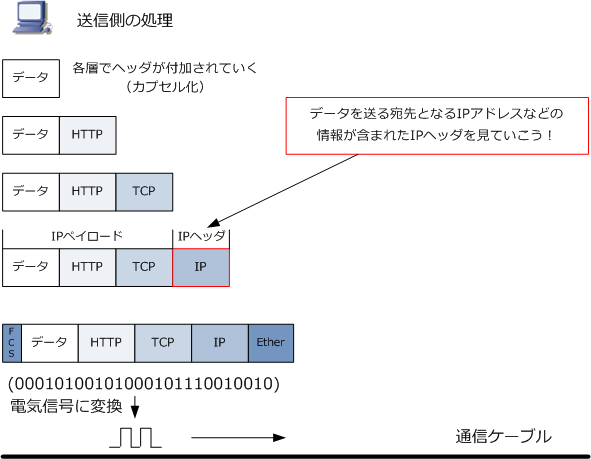
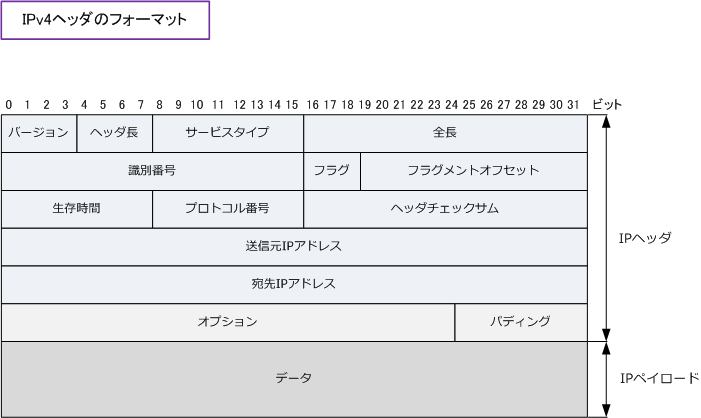

IP
IPとは
IP（ Internet Protocol ）は、TCP/IPの IP のことです。OSI参照モデルではネットワーク層で動作する プロトコルであり、TCP/IPの階層モデルにおいてはインターネット層で動作するプロトコルのことです。
IPは論理アドレス（IPアドレス）を各ノードに割り当てることで、各ノードを識別することができます。 このIPアドレスの宛先を確認することで、あるノードから別のノードへデータを送信することができます。 IPアドレスの宛先情報についてはIPヘッダに含まれています。それではこのIPヘッダを見ていきましょう。

IPヘッダのフォーマット
IPヘッダのフォーマットは以下の通りです。IPヘッダは 20バイト のサイズですが、オプションが追加された 場合は最大で60バイトのサイズとなります。ただ、オプションやパディングは一般的には使用されることは ないのであまり意識する必要はありません。「データ」はIPヘッダではなくIPペイロードと呼ばれる部分です。

※ IPペイロード部分には、TCPやUDPなど上位層プロトコルのヘッダとデータが含まれます。
| 各フィールド | 英語表記 | ビット | 各フィールドの説明 |
|---|---|---|---|
| バージョン | version | 4 bit | IPヘッダのバージョン番号の情報。ここでは「4」の値が入る。 |
| ヘッダ長 | IHL | 4 bit | IPヘッダの長さの情報。単位は32ビットであることからオプションを使用しない。 IPパケットの場合ここでは「5」の値が入る。32bit×5 = 160bit = 20byte。 |
| サービスタイプ | Type of Service | 8 bit | IPパケットの優先順位の情報。例えば音声トラフィックとデータトラフィック とでは音声トラフィックのデータを優先して送出することができる。QoS処理用。 |
| 全長 | Total Length | 16 bit | IPヘッダを含むパケットの全長。パケット長とも呼ばれる。 |
| 識別番号 | identification | 16 bit | 個々のパケットを識別するための情報。パケットが分割された時に分割された パケットには同じ識別番号にすることで、受信側で複数の分割されたパケット を受信した場合においても、この識別番号に基づき正しく組み立て処理できる。 |
| フラグ | Flags | 3 bit | パケット分割における制御の情報。3ビットの内訳は以下の通り。詳細は別途。 |
| フラグメント オフセット |
Fragment Offset |
13 bit | フラグメントされたパケットが元のパケットのどの位置であったかを示す情報。 |
| 生存時間 | Time to Live ( TTL ) |
8 bit | パケットの生存時間を示す情報。実際には、何台のルータ or L3スイッチを 通過することができるのかという情報。1台のルータを通過するごとにTTL値は 「 1 」つずつ減らされて、TTL値が「 0 」になると、パケットは破棄される。 |
| プロトコル | Protocol | 8 bit | 上位層（トランスポート層）のプロトコルが何であるのかを示す情報。この値は ICANNという組織により「プロトコル名」と「番号」が定義されている。例えば、 上位層プロトコルにTCPを使用する場合、このプロトコル番号は「6」になる。 |
| ヘッダ チェックサム |
Header Checksum |
16 bit | IPヘッダのチェックサムを表す情報。IPヘッダにエラーがないかをチェック。 |
| 送信元IPアドレス | Source Address |
32 bit | 32ビット（4byte)で構成された、送信元のIPアドレスの情報 |
| 宛先IPアドレス | Destination Address |
32 bit | 32ビット（4byte)で構成された、宛先のIPアドレスの情報 |
| オプション | Options | 可変長 | 通常は使用されないが、デバックやテストを行う際に使用される情報。 |
| パディング | Padding | 可変長 | 通常使用されないが、上記のオプションを使用した場合にはIPヘッダ長が 32ビットの整数倍にならない場合がある。32ビットの整数倍にするために 詰め物(Padding)として空データの 「 0 」 の値を入れることにより調整する。 |
IPヘッダのフィールドにある「フラグ」値には、以下の3ビットの組み合わせが値として入ることになります。 先頭ビットの0ビット目は未使用です。そしてこの先頭ビットは必ず値が「 0 」である必要があります。次に 中央ビットの１ビット目はパケットの分割（フラグメント）を許可する場合は値を 0 にして、フラグメントを 許可しない場合は値を「 1 」にします。そして最終ビットの2ビット目はパケットがフラグメントされた場合 に使用されます。分割された最後のパケットである場合は値を「 0 」にしてそうでなければ「 １ 」にします。
| ビット | 意味 | 値 |
|---|---|---|
| 先頭ビット 0 | 未使用 | 0 |
| 中央ビット 1 | パケットのフラグメントを許可する | 0 |
| 中央ビット 1 | パケットのフラグメントを許可しない | 1 |
| 最終ビット 2 | 分割された最後のフラグメントである | 0 |
| 最終ビット 2 | 分割された途中のフラグメントである | 1 |
IPヘッダのフィールドにあるプロトコルの値には以下のようなプロトコル番号が値として入ることになります。 ICMPやOSPF等はIPと同じインターネット層のプロトコルですが、これらのプロトコルはIPヘッダが付加され IPパケットとして転送されることから上位層プロトコルの番号があります。その他のプロトコル番号はこちら。
| プロトコル番号 ( 値 ) | 略称 | プロトコル名 |
|---|---|---|
| 1 | ICMP | Internet Control Message Protocol |
| 6 | TCP | Transmission Control Protocol |
| 17 | UDP | User Datagram Protocol |
| 88 | EIGRP | Enhanced Interior Gateway Routing Protocol |
| 89 | OSPF | Open Shortest Path First |
IPプロトコルの特徴
IPプロトコルには特筆すべき3つの特徴があります。以下の通り、IPプロトコル自体には信頼性のある ものではありません。信頼性のある通信にするかどうかは上位層に任せています。TCPを使用すれば 信頼性の高いTCP/IPの通信となります。UDPを使用した場合は、信頼性のある通信にはなりませんが、 効率性の高いUDP/IPの通信となります。階層型IPアドレッシングについては、IPアドレスとはご参照。
| IPプロトコルの特徴 | 説明 |
|---|---|
| コネクションレス型通信 | ネットワーク通信に際して、事前にコンピュータ間でコネクションを確立しないで いきなりデータ伝送をはじめる通信のことです。ただし、上位層プロトコルにTCP を使用すれば、コンピュータ間の通信でみればコネクション型の通信となります。 |
| ベストエフォート型通信 | ネットワーク通信に際して、最善の努力（ベストエフォート）は尽くすが、必ずしも 十分な品質は保証しない通信のことです。しかし上位層プロトコルにTCPを使用 することで、IPを使用した通信でもパケット損失がないように見せることができます。 |
| 階層型アドレッシング | IPプロトコルにより割り当てられる論理アドレス（IPアドレス）は、コンピュータが 所属しているグループ（ネットワーク部）と、そのネットワークに接続されている コンピュータを識別する番号（ホスト部）のこれら2階層により構成されています。 |